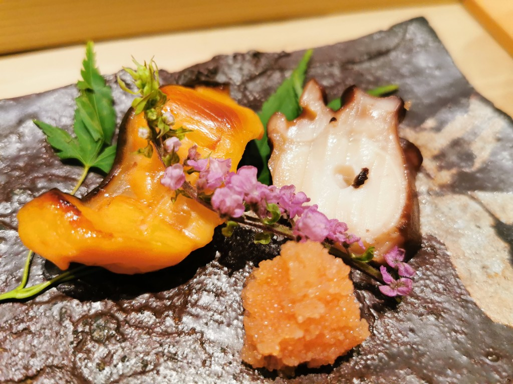
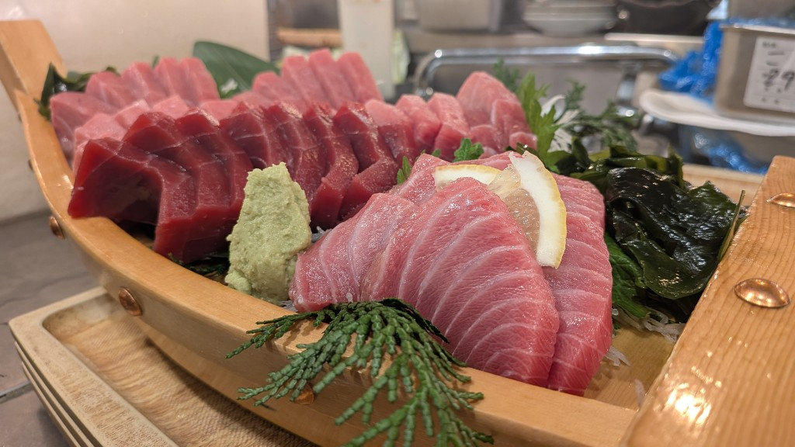
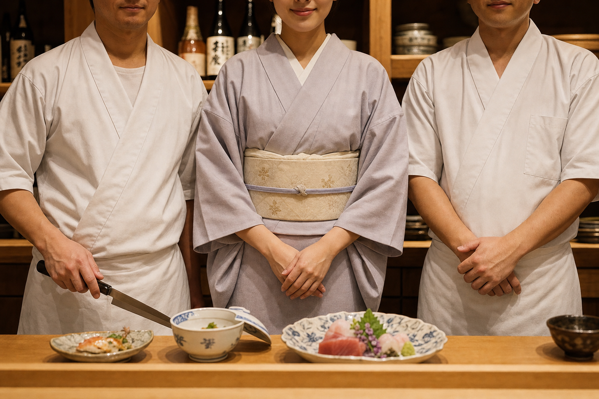
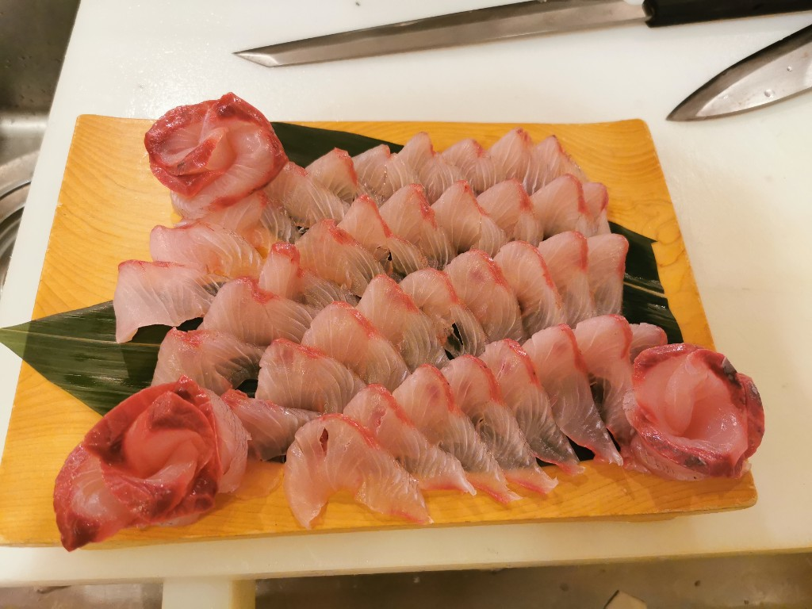
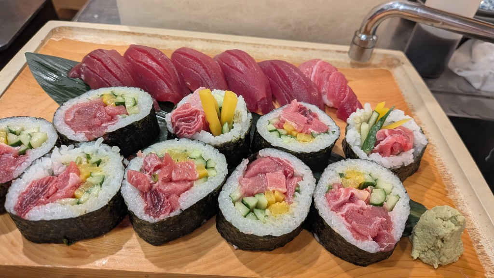
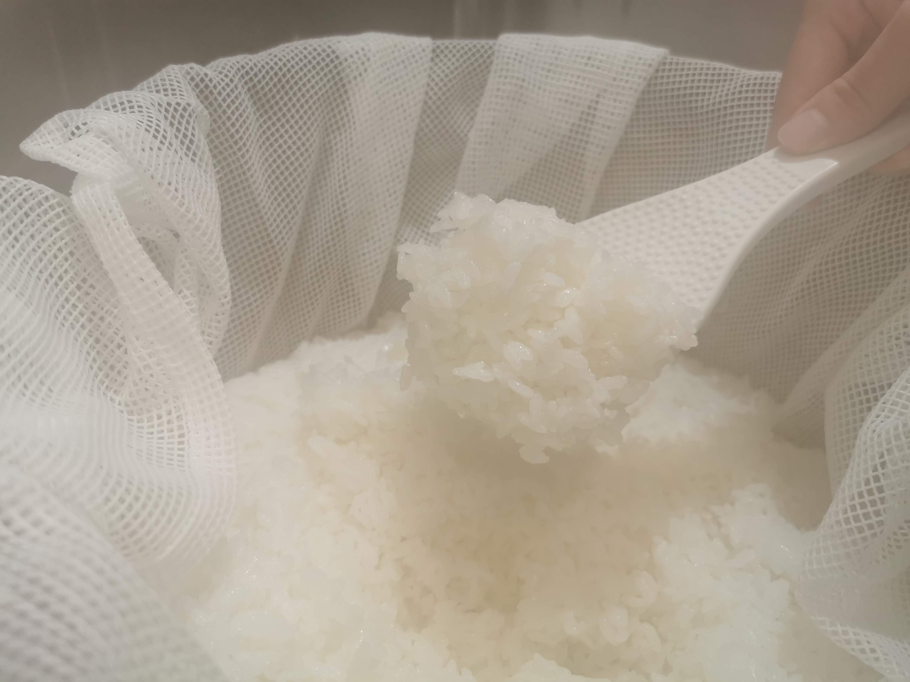

CONCEPT
とりこについて
桃や李は、何も語らない。
けれど、美しい花を咲かせ、
おいしい実をつければ、
自然と人が集まり、小道ができる。
おいしい料理と、温かい空間。
それだけで、人は自然と集い、
縁が生まれ、つながっていく。
小料理 とりこは、
そんな“小道”でありたい。
「桃李不言 下自成蹊」


MEMBERS
メンバー紹介

二十四歳の若女将のもとに、
飲食歴十五年の熟練の料理人がふたり。
—
毎朝、魚河岸に通い、
旬を見極め、一皿に仕立てる。
確かな技と、若い情熱が交わる厨房から、
季節の一品をお届けします。
GALLERY
旬の手仕事



EVENT
ご案内
第1回イベント
小料理 とりこ
第1回イベント
- 日時
- 2026年5月29日（木）19:00 〜 23:00
- 会場
- frame 恵比寿 会場までのアクセス →
- 参加費
-
¥5,000（飲み放題付き）
※お料理は別途ご注文いただけます
ご予約・詳細はInstagramをご確認ください
@koryouri_toriko